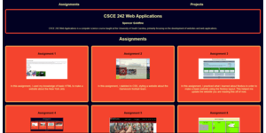

In this assignment, I used my knowledge of basic HTML to make a website about the New York Jets

In this assignment, I dabbled in CSS, styling a website about the Gamecock football team.
In this assignment, I practiced what I learned about flexbox in order to make a basic website using the flexbox layout. This helped me update the website you are reading this off of now.

In this assignment, I updated my main page with what I learned about css.
In this assignment, I recreated a UofSC website using what I've learned about flexbox and css.
In this assignment, I practiced using JavaScript in a variety of situations.
In this assignment, I used JavaScript to create two exercises involving if statements.
In this assignment, I used JavaScript to create two exercises involving loops and animations.
In this assignment, I used JavaScript to create two exercises involving arrays.
In this assignment, I used JavaScript to create classes involving childrens toys which have an overlay including all of the information about said toys.

In this assignment, I used JavaScript to read and load json files regarding different movies.